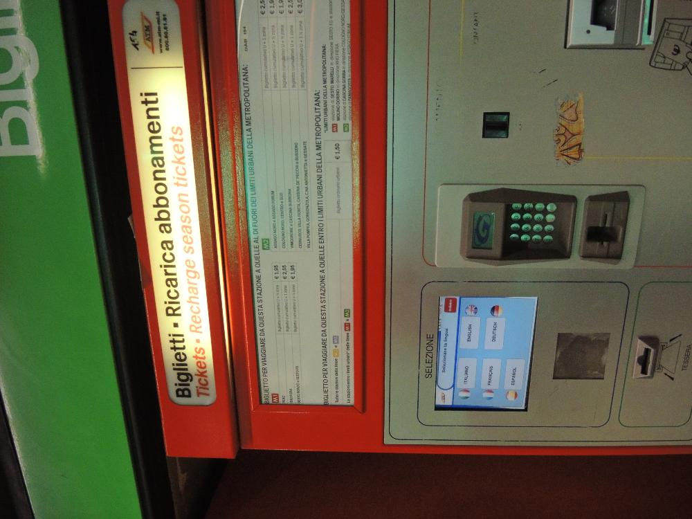
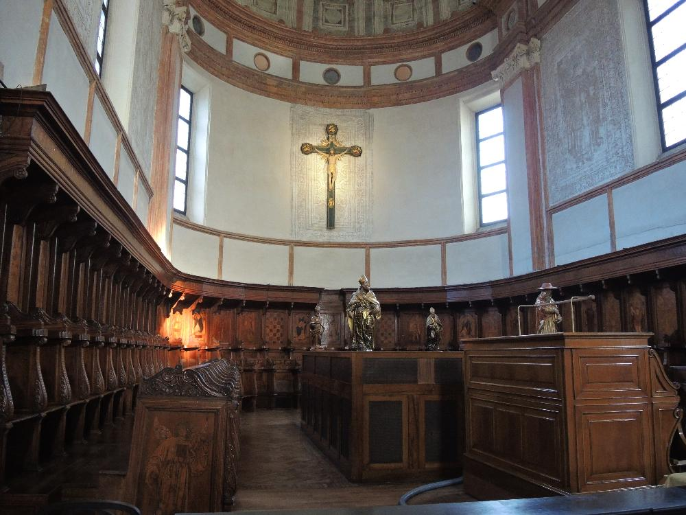
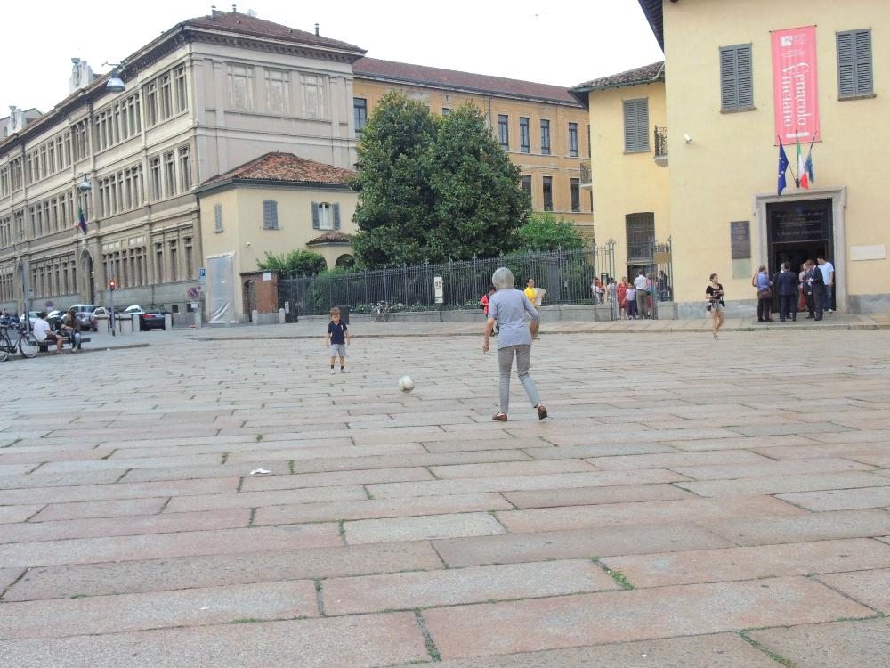

Милан. День десятый.
25.06.2014
- Полдня дождя
- Внутрь Миланского собора.
- Тайная вечеря.
- Замок
- И храм, и срам!
25.06.2014
В 2015 году в Милане будет экспо. Некоторым жителям это не нравится.
Новомодные здания разрушают архитектурный стиль города. Кстати сказать, стиля у этого города не существует. Это обычный мегаполис, где по соседству со старинными церквями натыканы новостройки.
Посади на балконе дерево
Покупаем блеты до Парижа

Автоматы для покупки билетов на общественный транспорт. Интуитивно не сильно понятные - есть какие-то зоны, электричики и метро.
Правильная крепость. Все как надо и ров, и откидной мост - вообщем в фильмах не врут. Сверху герб Висконти - поговаривают, что это была злобная и властная семейка.
Почти во всех городах Италии стоят вот такие поилки для людей, еще бы были кормушки - вообще бы круто было.
Памятник игле

Наташа сфоткала католический крест - сама напишет зачем, и что она хотела этим сказать. Наташу вообще как-то странно в католические церкви стало тянуть.
С "Тайная вечеря" нас прокатили - музей уже закрылся.
 Зато сфоткали бабушку, играющую с внуоком в футбол.